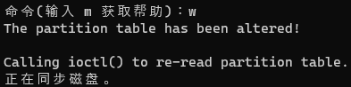

1. 系统相关命令
1.1. shutdown
Halt, power-off or reboot the machine
- 关机或者重启系统
shutdown -h now
1.2. poweroff
Halt, power-off or reboot the machine
poweroff
1.3. df
report file system disk space usage
- 查看磁盘使用情况
df
df -h
1.4. free
Display amount of free and used memory in the system
- 查看内存使用情况
free
free -h
1.5. ps
report a snapshot of the current processes.
- 查看进程信息
1.5.1. 使用方式 1
ps
- 只输出和当前终端会话相关的进程信息

TTY
- teletype 的缩写，电传打字机
- 代表进程的控制终端
TIME
- 进程消耗的 CPU 时间总和
1.5.2. 使用方式 2
# x 选项，告知 ps 命令显示所有的进程
ps x
TTY 列中的
?- 表示没有控制终端
STAT
- state 的缩写 s
- 显示进程的当前状态

1.5.3. 使用方式 3
将会显示属于每个用户的进程信息
不带前置连字符将使得命令以“BSD-style”运行
- Linux 版的 ps 命令支持 BSD-style
ps aux


1.6. top
display Linux processes
实时显示当前所有任务的资源占用情况
- ps 提供的是在 ps 命令被执行时刻机器状态的一个快照
- top 命令可以查看机器运行情况的动态视图
显示内容包含两部分
- 第一部分显示的是系统总体状态信息
- 第二部分显示的是一张按 CPU 活动时间排序的进程情况表
- 键盘指令
- h 显示帮助
- q 退出 top 命令
1.7. jobs
- 查看从某一终端启动的所有作业
1.8. bg
使进程在后台运行
格式
bg %作业编号 # 如果后台只有一个任务，可以不写作业编号
1.9. fg
使进程回到前台运行
格式
fg %作业编号 # 如果后台只有一个任务，可以不写作业编号
1.10. kill
terminate a process
kill 发送信号给某个进程
一般用来终止进程
格式
kill PID
kill %作业编号
# 如果没有指定信号，默认发送 TERM(终止, Terminate) 信号
kill [-signal] PID...
kill -l # 查看完整的信号列表
- 常用信号
- 可以通过信号编号或信号名来指定信号；信号名前可以带有 SIG 前缀
- 其他常被系统使用的信号
进程也有所有者，只有进程的所有者(或者超级用户)才能使用 kill 命令来给它发送信号
示例
kill -1 12536
kill -INT %1
kill -SIGINT 126501
1.11. killall
kill processes by name
发送信号给多个进程
给指定程序或者指定用户名的多个进程发送信号
格式
# name 程序的名称，不能传递 PID 和作业编号
killall [-u user] [-signal] name...
- 和 kill 命令一样，需要拥有超级用户权限，才能使用 killall 命令给不属于自己的进程发送信号
1.12. pstree
display a tree of processes
- 以树状的模式输出进程列表，该模式显示了进程间的父子关系
1.13. vmstat
Report virtual memory statistics
- 输出系统资源使用情况的快照，包括内存，交换空间和磁盘 I/O。如果想要持续查看输出，可以在命令后面加上一个间隔时间(以秒为单位)，命令将按照间隔时间来动态更新显示内容。按下 Ctrl-C 键可以终止输出。
1.14. xload
- 用来绘制显示系统时间负载情况图形的一种图形化界面程序
1.15. tload
graphic representation of system load average
- 类似于 xload 程序，但是图形是在终端上绘制。按下 Ctrl-C 键终止输出。
1.16. printenv
print all or part of environment
只显示环境变量
示例
printenv | less # 输出所有环境变量
printenv USER # 输出特定变量的值
1.17. set 和 unset
同时显示 shell 变量和环境变量
输出结果按字母顺序排列
unset 用于删除 shell 变量
示例
# 输出：shell 变量，环境变量，任何已定义的 shell 函数
set | less
set | grep -i 'variable_name'
unset 'variable_name'
1.18. export
- 将环境导出到随后要运行的程序中
1.19. mount
mount a filesystem
用于文件系统挂载
不带任何参数，将会调出目前已挂载的文件系统列表
mount
# 列表格式 device on mount_point type filesystem_type (options)
# 示例：/dev/mapper/fedora_localhost--live-root on / type ext4 (rw,relatime,seclabel)
- 示例
mount -t iso9660 /dev/hdc /mnt/cdrom
# -t 指定文件系统类型
1.20. umount
unmount filesystems
用于文件系统卸载，一般需要超级用户权限
设备正在被使用时，不能卸载
卸载设备的意义
- 卸载设备能确保缓存中的所有剩余数据全部写入设备，从而设备能被安全移除
- 如果设备事先没有卸载就被移除，那么缓存中就可能仍有剩余数据。如果未传输完的数据包含重要信息，那么可能导致设备损坏
- 缓存：通常指的是内存
挂载点
- 文件系统上的某个目录
- 一般在某个空目录上挂载。如果在非空目录上挂载设备，该目录下的原内容将不可见直到此设备被卸载
示例
umount /dev/hdc
1.21. fdisk
manipulate disk partition table
创建分区布局
fdisk：用于编辑、删除以及创建设备分区
分区前，需要先卸载设备
sudo umount /dev/sdb1
- 使用 fdisk 命令指定设备时，需要的是整个设备名而不是分区号
1.21.1. fdisk 使用过程
- p：查看当前分区布局
- l 查看所有可用分区布局类型
- t 通过分区布局类型 ID 改变分区布局类型
- w 将分区表写入磁盘

1.22. mkfs
build a Linux filesystem
创建新的文件系统
示例
sudo mkfs -t ext3 /dev/sdb1
- 支持的文件系统类型
- ext2
- ext3
- vfat(FAT32)
- msdos
1.23. dd
convert and copy a file
直接从/向设备写入块数据
这个命令非常危险，一定要仔细确认是否输入正确
格式
dd if=input_file of=output_file [bs=block_size [count=blocks]]
- 示例
dd if=/dev/sdb of=/dev/sdc # 将设备 sdb 的内容完全拷贝到 sdc
dd if=/dev/sdb of=flash_drive.img # 将设备 sdb 的内容完全拷贝到一个普通文件
1.24. md5sum
compute and check MD5 message digest
- 计算 MD5
md5sum filename
echo -n 'string' | md5sum